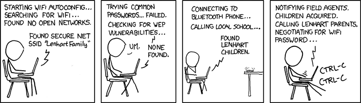

What is security?
se·cu·ri·ty
siˈkyo͝oritē/
noun
- the state of being free from danger or threat.
- the safety of a state or organization against criminal activity such as terrorism, theft, or espionage.
- procedures followed or measures taken to ensure the safety of a state or organization.
- the state of feeling safe, stable, and free from fear or anxiety.
Types of security
Physical security
Software security
- Network security
- Active vs. passive

Authentication vs. Authorization

| Authentication: | Are they who they say they are? |
|---|---|
| Authorization: | Are they allowed access here? |
- Authentication requires proof of identity
- Authorization requires authentication, plus permission from an authority
Identity
Persistent vs. authoritative
Imagine an identity thief who takes out lines of credit in their victim's name then pays all the bills on time...
- Is their identity persistent?
- Is their identity authoritative?
How about a project maintainer who never uses their real name online, but uses the same handle and email address across all sites?
Identity
How about a project maintainer who loses the domain which was hosting their email, and thus changes addresses abruptly?
If you're a sysadmin who works with multiple projects, you will run into these concerns often.

Principle of Least Authority
- User & Group management
- ACLs
- File permissions
System Security

Other Attacks
- Social engineering
- Pretexting
- Phishing
- Baiting
- Quid Pro Quo
- Tailgaiting
- Zero-Day vulnerabilities
Note
Social engineering leverages those person-to-person skills us computer folks are so well known for not having. Can someone let me borrow their laptop for a minute? I just want to tell my mom I'll be home late tonight... honest!
Pretexting is when someone contacts you with a pretext. They sound like they're authentic because they know something about you which they probably got off Facebook or something else. "Hi, I'm calling from Chase Bank and I noticed that your card might have been used at a location where fraud was committed. I have your name as Bob Smith and your date of birth as May third, 1992. Can you read me your card number and the three digits on the back?"
Phishing is something we've all been warned about. We all know that eBay and Paypal aren't going to email us asking for our bank account information. Just don't fall for it and you'll be okay.
Baiting is a little more interesting. Ever walk down the street and notice a thumb drive or SD card on the ground? Hey -- free thumb drive, right? Let's just put it in the computer, what could go wrong? Plenty. If it's too good to be true, it probably is.
Quid pro quo is a trade -- I'll give you something if you give me something. Would you trade your password for a chocolate bar? According to the BBC, someone tried this outside a subway station in London in 2004, and more than seventy percent of people took that trade! Thirty-four percent gave it up for free. Don't do that.
I suspect many of you who live in the dorms have been told about tailgating. You're unlocking the dorm door and someone comes up and says "hey, I forgot my key in my room, can you let me in" or maybe they're wearing a Domino's uniform and are carrying a pizza. You're a nice person, you want to help them. Don't do it.
And that leaves us with zero-day vulnerabilities. The term 'zero day' refers to the amount of time that the folks who write and maintain the code have had to fix it. If they don't know about it, they can't fix it. This is why it's so important for us to report vulnerabilities when we discover them as was discussed earlier.
What to do if you discover a vulnerability
First, test and document to verify that it exists.
Then, disclose it privately to those responsible for fixing it
Provide examples -- it's basically a bug report, but through private channels (not public tracker yet!)
Give them time to release a patch before announcing it
Some places have bug bounties
Passwords

Good Passwording
Server Side

- Rainbow Table
- Hashing / salt
- bcrypt/ scrypt
Password Managers
- Password managers (LastPass, 1Password, KeepPass*)
- Works with phones and other things
vim -x passwords.txt
Note
http://makezineblog.files.wordpress.com/2013/01/fractal-rainbow-table-runner-1.jpg We use passwords for everything we do online. Some (hopefully) semi random grouping of letters, numbers, and symbols which when combined with a username allow you to authenticate with a server or process. There are a couple common attacks on passwords, the most common of which is called a dictionary attack. This uses the fact that words are easier to remember than random characters, so it abuses human memory in order to greatly reduce the search space for passwords.
{kind=link}
pwgen + a password manager will help you have better passwords which you don't even have to remember! DEMO
Storing passwords on the server side is a whole other matter. One of the primary issues of concern is what happens if your server gets compromised. Lets say for instance that you just have a giant text file that has the form "username password" on each row. This would be super fast to to lookup users in, but if that file ends up in the wrong hands, you lose. A better option is to not store the passwords directly, but to store some representation of the password. This is where a hash comes in. Essentially a hash is a one way function that is fast to calculate, deterministic in output, but _very_ hard to reverse. If you store the hash of a password you can hash what they send you to verify who they are. Again we must consider what happens if our database was compromised. Since these hashes are deterministic and computing power is so cheap, we can precalculate what passwords correspond to what hashes, these precomputed files are called rainbow tables. To avoid the issue with rainbow tables we 'salt' our passwords. This adds a small random string to each password so that the search space for precomputing possible passwords becomes tera/petabytes large.
Enough about passwords, we now move into more interesting things called keys!
Keys
- Better than passwords
- Symmetric vs Asymmetric
- Diffie-Hellman / RSA

Key Exchange

RSA
- Math
- Math
- More Math
- Don't be shy

Note
Keys are password files. These can be used in place of a password for authentication and encryption.
Symmetric keys essentially work like passwords. They are basically a one-time pad where both parties need to know the key to enable data to be stored and retrieved. Asymmetric keys work by encrypting with a public key (one everyone can see), but only being able to be decrypted by the private key (which you shouldn't show anyone).
The fundamental problem with communication is that if you don't have a preshared key between two users, everything you say is being listened to and presumably logged.
Diffie Hellman key exchange is probably the most important result in cryptography. It allows two users to communicate in plaintext (non-encrypted) and trade their public keys in order to generate a shared secret so then they can communicate with encryption. RSA is an algorithm that follows Diffie-Hellman and is the most common way to do key exchange.
SSH
- Password vs Keys
- Passphrases
- authorized_keys
- Automation
$ ssh -D 9999 manatee@freshblue.lake
$ ssh -R 2222:localhost:22 freshblue.lake
Note
ssh is secure shell and provides a shell to a unix machine over the 'net by using RSA to encrypt communications between a client and server. Passwordless login, refuse connections without keys, tunneling. Commands at the end are run unecrypted.
Passphrases work by adding a password to a key file. Add your friends public keys to authorized_keys so they don't need a password to login.
ssh-agent, .ssh/config, /etc/ssh/sshd_config
DEMO Make ssh-keys, post to pastebin.osuosl.org
Brief History of Time (line of GPG)
- P(retty)G(ood)P(rivacy)
- Phil Zimmermann

GPG
- E-mail privacy
- Why you should use GPG
- Why people don't use GPG
- Keys, signing, keyservers
- Encryption

Ways to use GPG
- Enigamail
- mutt
- Command line
$ gpg --encrypt manateessecrets.jpg.exe
Certificates and HTTP
- Certificate Authorities
- https
- ssl/tls
$ openssl req -new -x509 -key /etc/ssl/private/privkey.pem \
-out /etc/ssl/certs/cacert.pem -days 1095
Man in the Middle
{kind=link}
Note
- 650 CAs
- Attacks on https/ssl
- Future
DEMO sslsniff
WiFi
wep
wpa
wpa2
- Wireshark
- Demo
Note
- Attacks
- mschapv2
DEMO Wireshark
Crypto-wares
- Files
- Tarsnap, SpiderOak, rsync over ssh
- Communications
- VPN
- TextSecure/ RedPhone
- Tor
- https everywhere
- Security
- Metasploit, BEEF
- AirCrack, sslstrip
Math!
- Primes
- Number Theory
- Fields
- Elliptic Curves

Note
DEMO rot13
One Last Thing
- https://priv.ly ( proudly hosted at the OSL)
- "I have nothing to hide"
- jeremykun.com
- thoughtcrime.org
- https://www.schneier.com/
Lesson 8: Web application security
{kind=link}
Web application security
- Who needs to worry about web application security?
- Everyone!
- What kinds of attacks are seen in the wild?
- Many!
- What can devops do about these attacks?
- A lot!
Note
Everyone needs to worry about web application security. You need to worry, because you're learning how to write web applications. You want to avoid making decisions which could lead to exposing vulnerabilities and letting bad people use your service to do bad things. You also need to worry even if you're not writing web applications, because you're using web applications. The web is still a wild and wooly place, and the last line of defense for the user is their own common sense.
What kinds of attacks are seen in the wild? The image shows a dizzying array of acronyms and shorthand but we'll be going over those in a little more detail.
And what can devops like us do about these attacks? Plenty -- wait and see.
Code Injection

- Attacks
- SQL Injection
- Cross-Site Scripting (XSS)
- Cross-Site Request Forgery (CSRF)
- Remote Code Execution
- Defenses
- Sanitize your inputs!
http://bobby-tables.com/ https://docs.djangoproject.com/en/dev/ref/contrib/csrf/ http://guides.rubyonrails.org/security.html
Note
These types of attacks consist of code that is introduced into the application causing unexpected behavior. This code can be introduced unintentionally by typical users who use quotes or ampersands in their inputs as well as intentionally by nefarious folks.
The comic demonstrates a classic SQL injection attack. Bobby took advantage of the school's software not properly sanitizing their inputs by including a command to drop the students table, causing the kind of chaos often seen in xkcd comics.
Cross-site scripting works much the same way: someone posts a comment on a blog which includes Javascript which gets executed when you view the comment. When it is executed, it does something horrible like send them your cookie for that blog site.
Cross-site request forgeries are similar but instead of Javascript you'll see image links that really point to another site like your bank, hoping that your cookies will let them transfer money from your accounts to theirs.
Remote site execution is what it sounds like: just like the SQL injection attack, but instead running a shell command on the web server. I think by now you all have enough experience with running commands on your virtual machines to know how bad that could be.
Luckily, each of these threats can be addressed the same way: listen to Bobby's mom and sanitize your inputs! There's a web site dedicated to helping developers with SQL injection threats which I've listed above, but the same concepts apply to the other threats. Want to stop cross-site scripting? Don't allow users to contribute arbitrary Javascript in comments. Want to stop cross site request forgeries? Make sure your GET requests are free of side-effects, and include tokens in your forms. As a bonus, Django will do that last bit for you if you let it -- check out that second link up there for more details. That third link is the Rails security guide and provides advice on these issues as well as many others.
Web Server-Specific Attacks
{kind=link}
- Version-Based
- Configuration-Based
Note
There is a constant battle between developers and the bad guys -- one side discovers vulnerabilities, the other side fixes them. One of the easiest things to do to keep the bad guys out is to use the most up-to-date version of your web server, regardless of whether it's Apache or IIS or nginx.
The graph above shows the most popular versions of Apache as of February 2014 according to Netcraft. Apache encourages admins to run the latest major release of the 2.4 stable branch, which is Apache 2.4.7. How many of those releases do you see in that image? That's right -- none. Heck, two of the top fifteen are EOLed -- they aren't even receiving security updates any longer! This is bad. Don't be like them.
But it's not enough to run the latest version. You should also make sure your configuration files are updated as well. Some default configurations will include accounts or passwords which can be guessed by hackers. Other times certain features will be enabled by default, which can introduce vulnerabilities you don't expect even though you're not using those features. Read the release notes when you update your software. Pay attention to details. They will. You should too.
Problems with Design and Implementation
- Authentication and Authorization
- Session Management
- Information Leakage
- Unauthorized Directory Access
Note
The remaining threats facing the typical web developer come down to design and implementation problems. The fine points of authentication and authorization have been discussed already: make sure that all your actions are authorized by authenticated users and you should be okay.
Also, don't let your cookies have infinite lifetimes. Better to have your users occasionally log in again than let them be vulnerable to those cross-site attacks we covered before. Pro tip: PHP has a default setting for "session.cookie_lifetime" of zero, which means they never expire. If you're using PHP, fix that.
Information leakage is pretty sneaky. Let's say your app allows users to request a password reset by entering their email addresses. If your app behaves differently when valid and invalid addresses are input, congratulations, you're leaking information. Unauthorized directory access is a specialized form of information leakage -- while it's nice to let people know how to contact your staff, you might not want to let them download everyone's email address and such.
What Not to Do: The Exercise
Getting Up to Date
- ssh into your vagrant environment
- change directory to your local systemview repo
$ cd ~/projects/systemview
- Make sure your local copy is up to date
$ git pull
- If you've modified code you'll need to follow these instructions
$ git stash save "some witty name about your work"
$ git pull --rebase
Let's Check out Dean's (not so) Awesome Code
$ git checkout <not so awesome code branch goes here>